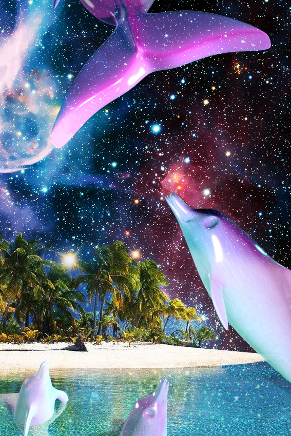
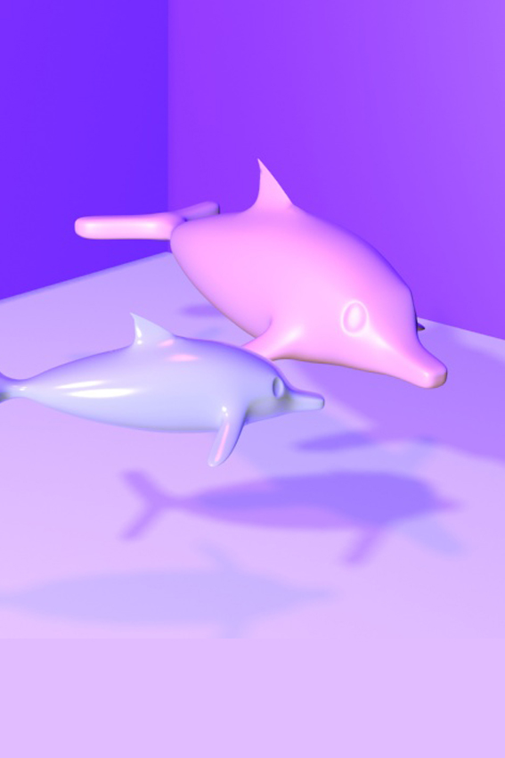
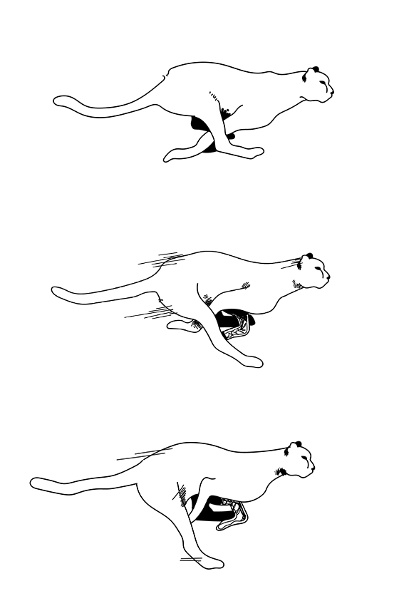

3DMAX
3D 모델 제작 후, 우주와 바다를 합성 하여 배경을 만들어 초현실 적이고몽환 적인 느낌을 낸 작품이다.

Web Design
초현실주의 작가 '르네 마그리트'를 소개하는 웹페이지를 디자인 했다.

3DMAX
3D 모델링 제작 중, omni조명, 그림자 색 등을 사용 해 전체적인 배경 분위기를 변환시키는 작업을 했다.

Illustraion
표범이 달리는 영상을 제작하기 위해 일러스트 작업을 한 일부분 이다.